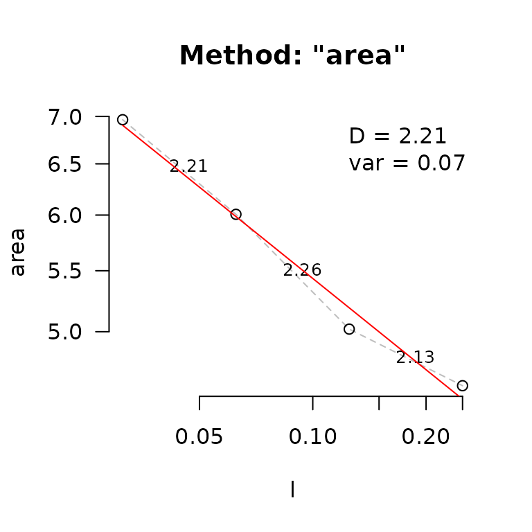
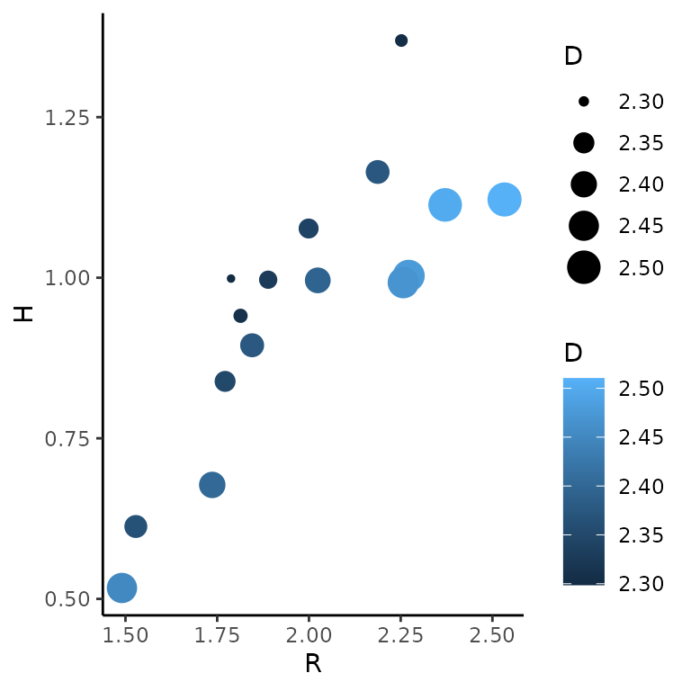

In this vignette, we go over the basic steps to calculate standard complexity metrics for digital elevation models (DEMs). In this example, we use a DEM of 8x8m with a resolution of 0.01m.

Let’s say we want complexity metrics for a certain square of size 2m
around certain xy-coordinates. We can start by using the
dem_crop() function.
dem1 <- dem_crop(horseshoe, x0 = -466, y0 = 1269, L = 2, plot = TRUE)
plot(dem1)
Height range
hr(dem1)
#> [1] 0.9766939Rugosity
# Height variation method
rg(dem1, method = "hvar", L0 = 0.05, parallel = FALSE) # Parallel = TRUE enables parallel processing using multiple cores to speed up the calculations using the height variation method. Only use this if you have a powerful computer with at least four cores.
#> [1] 1.6123
# Area method
rg(dem1, method = "area", L0 = 0.05)
#> [1] 1.619947Fractal dimension
The fractal dimension metric provides information about how a surface
fills a volume and indicates how space varies over various scales.
habtools provides different methods to estimate fractal
dimension and the result may change depending on the method chosen. See
the vignette on fractal dimension for more examples of how the results
of different methods vary. Below we focus on two methods:
hvar and area.
Height variation method
The height variation method is based on the relationship between
height range and scale. Basically, the DEM is divided into small squares
with sizes specified in lvec. Within each square, the
height range is calculated and logged. This results in a data frame with
many height ranges (depending on the scale). This data is then
summarized by taking the mean or median. The fractal dimension is
finally calculated as: \[D = 3- b,\]
with b being the slope of the linear regression between height range (h)
and scale (l) \(log(h) \sim log(l)\).
Because a range of values is needed to calculate a height range the
smallest value of lvec should always be at least two times
the resolution of the DEM, and up to 10 times bigger. The largest value
should be the extent of the DEM square. We suggest to choose a vector of
doubling values for lvec. For example, if the resolution =
0.01m and the extent = 2m, we could choose lvec =
c(0.0625, 0.125, 0.25, 0.5, 1, 2). However, to speed the
example up, we will use one order of magnitude with lvec =
c(0.25, 0.5, 1, 2).
# Height variation method
fd(dem1, method = "hvar", lvec = c(0.25, 0.5, 1, 2), plot = TRUE, diagnose = TRUE)
#> $D
#> [1] 2.387569
#>
#> $data
#> l h
#> 1 0.25 0.2814564
#> 2 0.50 0.4762113
#> 3 1.00 0.7949864
#> 4 2.00 0.9766939
#>
#> $lvec
#> [1] 0.25 0.50 1.00 2.00
#>
#> $D_vec
#> [1] 2.241310 2.260672 2.703024
#>
#> $var
#> [1] 0.2611609
#>
#> $method
#> [1] "hvar"diagnose=TRUE allows us to visualize the calculation and
model fit. This also allows us to investigate any scale transitions in
fractal dimension and provides a list of information including the
estimated fractal dimension (D), the data used for the regression, the
lvec, the D_vec (vector of fractal dimensions
across scales), the variance of the fractal dimensions across scales,
and the method used.
Area method
The area method operates quite differently to height variation, and is therefore not comparable to the height variation method described above. This method uses surface areas at varying scales and calculates the fractal dimension as: \[D = 2 - b,\] where b is the slope of the linear regression between surface area (a) and scale (l): \(log(a) \sim log(l)\).
The surface area is calculated at each scale by projecting the DEM to
the resolution of that scale. Similar to the above method, we suggest a
doubling vector for lvec. However, the smallest scale can
be as small as the resolution of the DEM and the largest scale should
not approach the extent DEM (ideally it stays 4 to 8 times smaller than
the extent).

#> $D
#> [1] 2.231573
#>
#> $data
#> l area
#> 1 0.03125 7.092804
#> 2 0.06250 6.144461
#> 3 0.12500 5.163649
#> 4 0.25000 4.401752
#>
#> $lvec
#> [1] 0.03125 0.06250 0.12500 0.25000
#>
#> $D_vec
#> [1] 2.207070 2.250895 2.230313
#>
#> $var
#> [1] 0.02192633
#>
#> $method
#> [1] "area"Multiple metrics
It is possible to calculate these three metrics by using the
rdh() function. Note that the resolution (L0)
for the rugosity calculation will be set as the smallest value of
lvec if method_rg is set to
"hvar". This can decrease the estimate of R.
rdh(dem1, lvec = c(0.125, 0.25, 0.5, 1, 2), method_fd = "hvar", method_rg = "hvar")
#> fd calculation using hvar method.
#> rg calculation using hvar method.
#> L0 is set to 0.125.
#> R D H
#> 1 1.552032 2.300395 0.9766939
rdh(dem1, lvec = c( 0.125, 0.25, 0.5, 1, 2), method_fd = "hvar")
#> fd calculation using hvar method.
#> rg calculation using area method.
#> L0 is set to the resolution of the raster: 0.01.
#> R D H
#> 1 2.12501 2.300395 0.9766939
rdh(dem1, lvec = c(0.03125, 0.0625, 0.125, 0.25), method_fd = "area")
#> fd calculation using area method.
#> rg calculation using area method.
#> L0 is set to the resolution of the raster: 0.01.
#> R D H
#> 1 2.12501 2.231573 0.9766939Multiple squares
The function dem_split() allows you to subdivide a DEM
into equal parts. Let’s divide the big raster into 2x2m squares. Note
that this function will only work well if you have a square DEM. You
also want to choose the size so that the DEM can be divided into equal
parts. You can then calculate metrics for the list of DEMs.
dem_list <- dem_split(dem, size = 2)
# calculate one metric for all squares
sapply(dem_list, hr)
#> [1] 0.5169916 0.6127143 0.8386080 0.8948445 0.6774139 0.9407241 0.9958875
#> [8] 0.9968965 1.1133885 1.0766172 1.1218033 1.0029795 0.9923670 1.1646364
#> [15] 0.9986641 1.3692834
# calculate multiple metrics
data_rdh <- suppressMessages(lapply(dem_list, rdh, method_fd = "hvar", lvec = c(0.25, 0.5, 1, 2))) %>%
bind_rows()
ggplot(data_rdh) +
geom_point(aes(x = R, y = H, color = D, size = D)) +
theme_classic()
Sample a random square
habtools also provides a way to crop a random square out
of a DEM.
dem <- dem_sample(horseshoe, L=2, plot=TRUE)
plot(dem)Rules of thumb
- When analyzing and comparing multiple DEMs, make sure that each DEM has the same resolution and extent.
- When using the
hvarmethod, the smallest value oflvecshould be between two times and ten higher than the resolution. - When using the
hvarmethod, the extent (highest value oflvec) should ideally be 1 to 2 orders of magnitudes higher compared to smallest value oflvec. -
lvecvalues should match scales of particular interest (e.g. matching body sizes of animals inhabiting the surface). - When using the
areamethod, thelveccan range from the resolution to around 1/8 of the extent. Higher scales will increase bias of the method. -
lvecand chosen method needs to be the same across all calculations to make comparisons among DEMs.